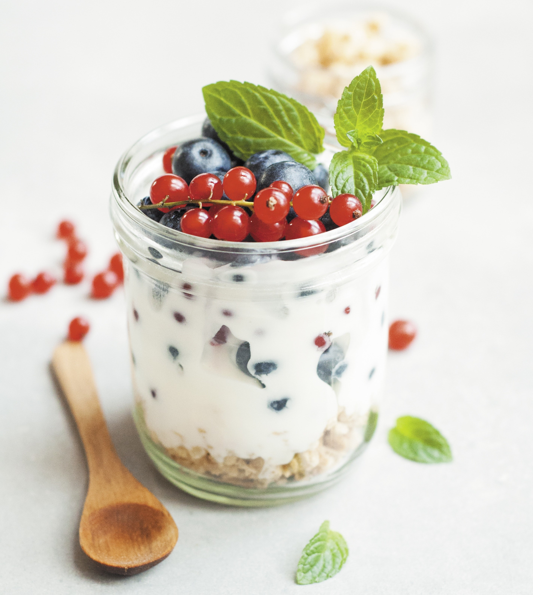
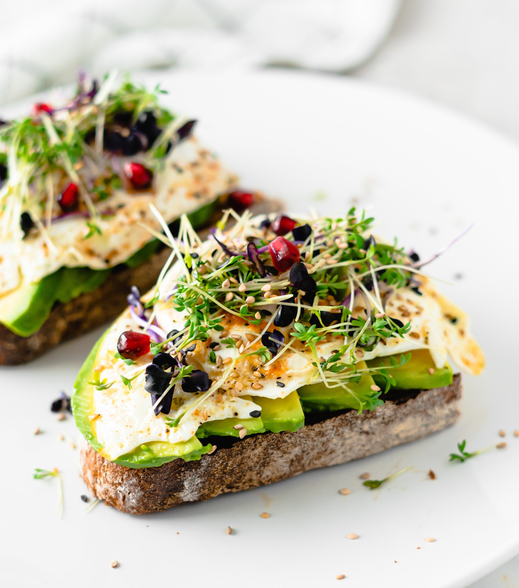

On this website you can find a wide variety of recipes that will help you cook delicious breakfasts every morning. We offer different recipes depending on the occasion you choose, you can create fun recipes for children or some practices that take less time. All the recipes that you will find will be adapted to your needs and tastes.
| Recipe | Ingredients | Process | Results |
|---|---|---|---|
| Overnight oats |
|
|

find the recipe here |
| Classic waffles |
|
|
|
| Omelete |
|
|
find the recipe here |
| Avocado toast |
|
|
 |
Recipes is a website that will help you cook delicious breakfasts with
less stress and more joy every morning. We offer different recipes and
cooking tips for the home. Helping create is what this website works
on to record your favorite family recipes. You find a variety of
recipe guides and meal plans, with more than 15 million readers each
month.
Colombia
"You don't have to cook fancy or complicated gourmet recipes, just cook good food from fresh ingredients."